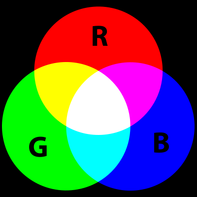
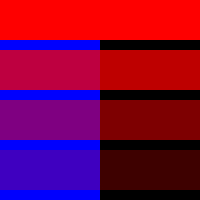

| Does 0-255 seem arbitary to you? Color for a given shape needs to be stored in the computer's memory. This memory is just a long sequence of 0's and 1's (a whole bunch of on or off switches.) Each one of these switches is a bit, eight of them together is a byte. Imagine if we had eight bits (one byte) in sequence - how many ways can we configure these switches? The answer is (and doing a little research into binary numbers will prove this point) 256 possibilities, or a range of numbers between 0 and 255. We will use eight bit color for our grayscale range and 24 bit for full color (eight bits for each of the red, green, and blue color components). |
background(255); // Setting the background to white stroke(0); // Setting the outline (stroke) to black fill(150); // Setting the interior of a shape (fill) to grey rect(50,50,75,100); // Drawing the rectangle

Remember finger painting? By mixing three "primary" colors, any color could be generated. Swirling all colors together resulted in a muddy brown. The more paint you added, the darker it got.
Digital colors are also constructed by mixing three primary colors, but it works differently from paint. First, the primaries are diff erent: red, green, and blue (i.e., "RGB" color).
And with color on the screen, you are mixing light, not paint, so the mixing rules are different as well.
background(255); noStroke(); // Bright red fill(255,0,0); ellipse(20,20,16,16); // Dark red fill(127,0,0); ellipse(40,20,16,16); // Pink (pale red) fill(255,200,200); ellipse(60,20,16,16);
In addition to the red, green, and blue components of each color, there is an additional optional fourth component, referred to as the color's "alpha." Alpha means transparency and is particularly useful when you want to draw elements that appear partially see-through on top of one another. Th e alpha values for an image are sometimes referred to collectively as the "alpha channel" of an image.
It is important to realize that pixels are not literally transparent, this is simply a convenient illusion that is accomplished by blending colors. Behind the scenes, Processing takes the color numbers and adds a percentage of one to a percentage of another, creating the optical perception of blending. (If you are interested in programming "rose-colored" glasses, this is where you would begin.)
Alpha values also range from 0 to 255, with 0 being completely transparent (i.e., 0% opaque) and 255 completely opaque (i.e., 100% opaque).

Example: Alpha transparency
background(0); noStroke(); // No fourth argument means 100% opacity. fill(0,0,255); rect(0,0,100,200); // 255 means 100% opacity. fill(255,0,0,255); rect(0,0,200,40); // 75% opacity. fill(255,0,0,191); rect(0,50,200,40); // 55% opacity. fill(255,0,0,127); rect(0,100,200,40); // 25% opacity. fill(255,0,0,63); rect(0,150,200,40);
RGB color with ranges of 0 to 255 is not the only way you can handle color in Processing. Behind the scenes in the computer's memory, color is always
talked about as a series of 24 bits (or 32 in the case of colors with an alpha). However, Processing will let us think about color any way we like, and
translate our values into numbers the computer understands. For example, you might prefer to think of color as ranging from 0 to 100 (like a percentage).
You can do this by specifying a custom colorMode().
colorMode(RGB,100);
colorMode(RGB,100,500,10,255);